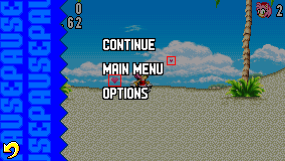
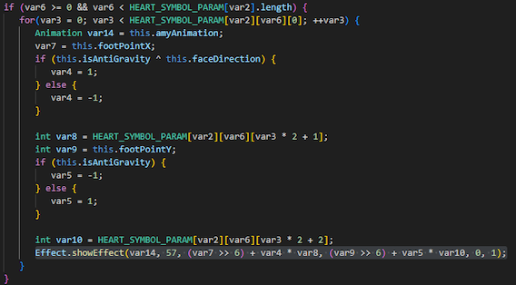

Other Projects
Game Translation
If you want to help for the translation, either by adding new languages or even correcting probable grammar/verbal inconsistencies, you can find the text files and sprite sheets to translate in the lang folders.
The lang folders are located in the assets folder.
Here are the available languages in the game and their folder names:
- lang0: English
- lang1: French
- lang2: Spanish
- lang3: Brazilian Portuguese
- lang4: German
- lang5: Italian
- lang6: Russian
- lang7: Japanese
- lang8: Simplified Chinese
And here are the possible languages that can be added in the game:
- Latin Spanish
- Traditional Portuguese
- Turkish
- Polish
- Traditional Chinese
You can also work on other languages of your preferences. However, some languages may only be verified by your own responsibility.
Amy's Hearts Glitch
In the Android port of Sonic Advance, there is a glitch that hasn't been fixed yet.

HOW TO PERFORM THE GLITCH:
When playing as Amy, perform a Hammer attack and pause the game immediately after.
Then, quit the game and start a game afterwards.
Once done correctly, the game soft-locks and your only option is to close the game application.
The reason why this occurs is because of the hearts displaying on screen.
When you quit a game with hearts displaying, replaying a game will cause a graphical glitch.

HOW TO SOLVE IT:
Here is the code to understand how the hearts are displaying.
It is located in the PlayerAmy file of the SonicGBA folder.
The solution in theory would be to tweak the code so the hearts will disappear when we pause or quit the game.
In the Mobirev mod, there is a condition that prevents players from pausing the game when performing a Hammer attack.
This reduces the chance of causing the soft-lock, but this isn't a great solution.
If you can find a way to fix the issue, the condition to prevent players from pausing can be lifted.